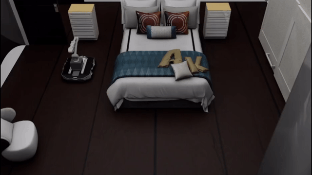
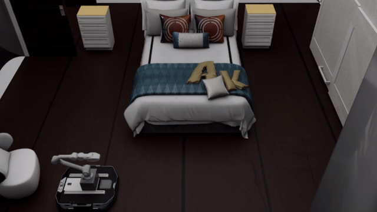
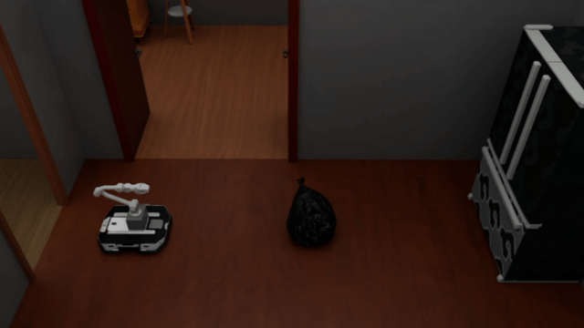
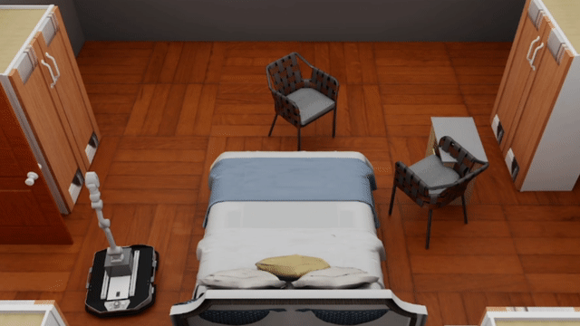
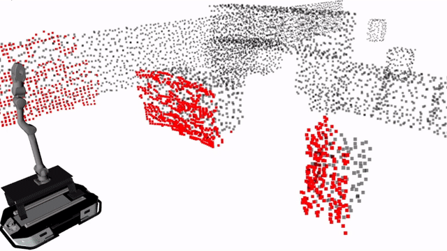

Anonymous Submission
GeoPT: Privileged Geometric Post-Training for One-Step Whole-Body Motion Planning in Mobile Manipulation
Collision-aware post-training with privileged geometry for fast, deployable whole-body planning.
Overview

Abstract
Flow and diffusion models have recently emerged as effective generative approaches for motion planning in mobile manipulation. However, three challenges remain: collecting demonstrations that cover diverse whole-body interactions is difficult; their iterative sampling procedures can make local replanning computationally expensive; and imitation-trained planners often degrade when deployed beyond the support of their training data. To address these challenges, we present GeoPT, a privileged geometric post-training framework for one-step whole-body motion planning. An automated simulator constructs a synchronized data pipeline of expert plans, robot states, and egocentric range measurements to train a diffusion-based behavior prior. This prior initializes a compact one-step Gaussian local planner. During post-training, predicted action chunks are flagged for geometric correction when scene or self-collision occurs. For these collision cases, differentiable collision distances correct unsafe plans, while a frozen DDPM behavior prior constrains policy drift and preserves pretrained task behavior. Privileged geometry is used only during training. We evaluate GeoPT in obstacle avoidance, goal-reaching, and pick-and-place tasks, including real-robot deployment, demonstrating robust whole-body motion planning with efficient inference.
Video
Qualitative Results
Simulation





Real-World Deployment